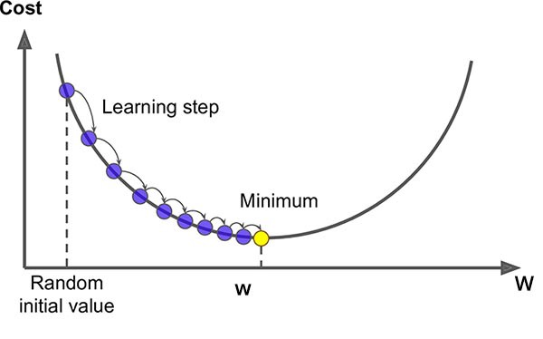
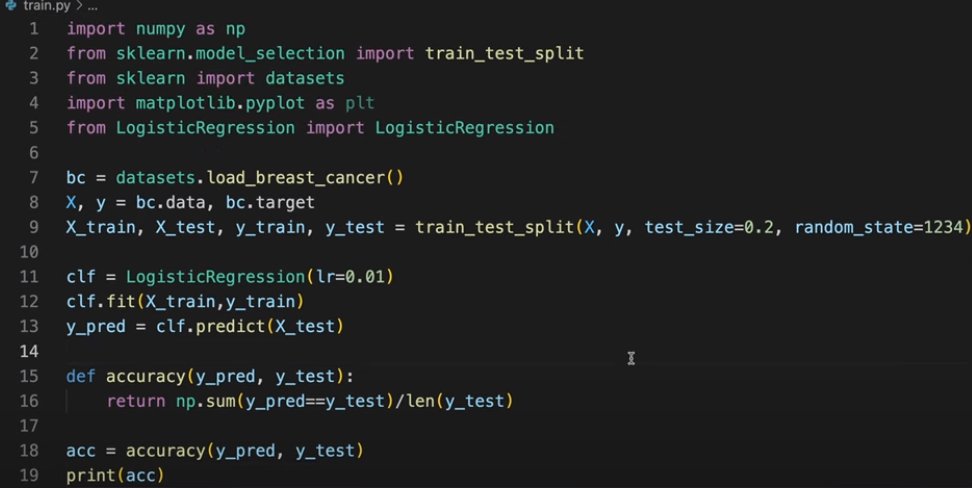

Régression logistique
La régression logistique est une méthode de classification supervisée.
Son modèle permet de classer des données en deux classes, avec un nombre de paramètres limités.
Soient :
: le vecteur d'entrée [tous les pixels de l'image sont convertis en un vecteur colonne]
: l'étiquette, cad la valeur associée à l'image (cat or not cat) . [Dans notre cas de régression logistique, c'est une valeur numérique soit 0, soit 1]
: la prévision donnée par le modèle, (que l'on comparera à l'étiquette pour mesurer l'"efficacité" du modèle)
Le modèle
La prévision du modèle est donnée par la formule :
Avec la fonction sigmoïde .
Les paramètres de ce modèle de régression logistique sont :
Un vecteur : de taille .
Un biais réél.
La fonction de coût
Soit la function Loss qui mesure la différence entre la prédiction et le résultat désiré :
[Question : pourquoi est moins intéressante ?]
La fonction Coût (parfois notée ) est ensuite calculée pour un lot (batch en anglais) de données étiquetées.
Cette fonction a pour paramètres et :
La descente de gradient : Calcul de

À chaque étape on peut donc modifier les paramètres du modèle avec les formules :
(en notant et )
, avec un taux d'apprentissage (ou learning rate) .
Ressource : Le gradient vu par 3Blue1Brown
Exercice : Écrire un programme de ce modèle de régression logistique

Pour aller plus loin :
Tout sur le gradient :
Principes, notations, dérivées, zoom détaillé sur le Gradient comme vous ne l'avez jamais vu !
Préparation du prochain TP :
Les réseaux de neuronnes par 3Blue1Brown